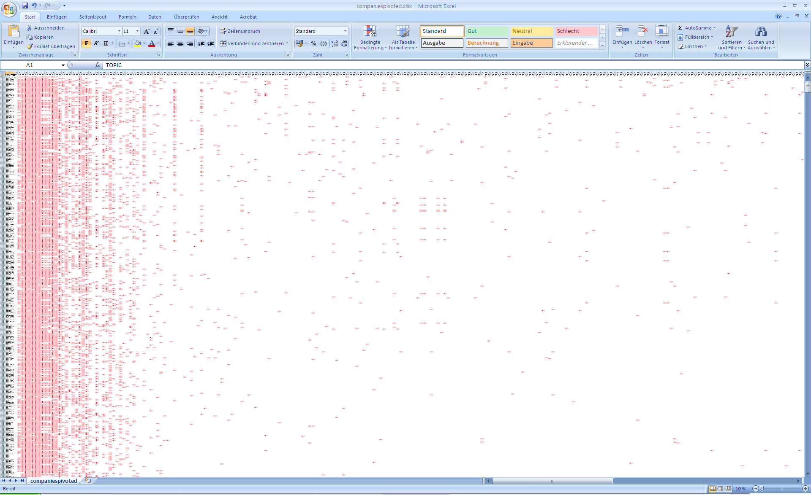

Repräsentation
Contents
2. Repräsentation#
Bis hierhin haben wir nur auf einer sehr abstrakten Ebene besprochen, was für Daten wo liegen und wie diese Datenblöcke gelesen werden können. Womit wir uns noch nicht befasst haben, ist wo bestimmte Tupel und Blöcke liegen. Nach unserer intuitiven Vorstellung hoffen wir, dass alle Tupel einer Relation hintereinander im Speicher zu finden sind, das ist aber oftmals nicht der Fall. Nun muss ein Weg gefunden werden diese Tupel und Blöcke zu lesen, ohne bei jeder Anfrage die gesamte Festplatte lesen zu müssen.
Architektur

In diesem Kapitel befinden wir uns in der Systempufferschnittstelle. Hier geht es hauptsächlich um Seiten-/ und Blockverwaltung, Puffermanagment, sowie Cashing. Für uns ist die relevante Fragestellung, ob unsere gesuchten Tupel im Hauptspeicher sind oder nicht.
2.1. Aufbau#
Es gibt folgende Dateneinheiten:
Attributwerte sind Bytelisten oder auch “Felder” fester oder variabler Länge
Tupel sind Feldlisten fester oder variabler Länge, auch genannt „Datensätze“
Physische Blöcke speichern Datensatzmengen/-listen
Relationen sind Mengen von Blöcken und bilden eine „Datei“, dazu gehören auch Indexstrukturen, wenn z.B ein
PRIMARY KEYvorhanden ist
2.2. Felder etc.#
Die kleinste Dateneinheit sind Attributwerte, diese werden durch „Felder“ (fields) repräsentiert. Die Fragestellungen die in diesem Themenabschnitt thematisiert werden sind:
Wie werden Datentypen als Felder repräsentiert?
Wie werden Tupel als Datensätze repräsentiert?
Wie werden Mengen von Datensätzen oder Tupeln in Blöcken repräsentiert?
Wie werden Relationen als Mengen von Blöcken repräsentiert?
Was passiert bei variablen Feld- oder Tupellängen?
Was passiert wenn ich einen Block nicht einheitlich in Tupel einteilen kann?
Was passiert wenn sich die Größe eines Datensatzes ändert, insbesondere vergrößert?

2.3. Datentypen#
Alle Daten werden letzendlich als Bitsequenzen dargestellt bzw. werden alle Daten irgendwann als Bytesequenzen dargestellt. Aus GDBS sollten die folgenden Datentypen bekannt sein:
Integer belegen im Speicher 2 oder 4 Byte
Float belegen im Speicher 4 oder 8 Byte
Strings fester Länge(CHAR(n)) sind Felder die feste n Bytes zur Verfügung haben. Die fehlenden Byte-Werte werden mit Nullwerten (\(\perp\)) ge-padded. Beispiel:‚Katze‘ in CHAR(8) wäre also K a t z e \(\perp\)\(\perp\)\(\perp\)
Strings variabler Länge(VARCHAR(n)) werden mit n+1 Byte reserviert. Die Länge kann maximal 255 Byte sein, daher gibt es oft VARCHAR(255). Hier gibt es einmal die Variante, dass das erste Byte die Länge speichert, die weiteren die Attributwerte speichern und die fehlenden Bytes ignoriert werden. Beispiel: 5 K a t z e. Eine andere Variante ist, dass die ersten Bytes die Attributwerte speichern und hintendran ein null-Wert gespeichert wird. Beispiel: K a t z e \(\perp\).
{kind=link}
2.3.1. Datum / Bit / Boolean#
DATE, TIME werden i.d.R. als String fester Länge repräsentiert. Ein Problem ist jedoch, dass die Zeit mit Bruchteilen von Sekunden gespeichert werden kann (theoretisch beliebig genau). Eine Lösung ist die Speicherung als String fester Länge mit maximaler Genauigkeit. Eine weiter Lösung ist die Speicherung als String variabler Länge.
BIT(n) ermöglichen das Arbeiten mit sehr detaillierten Bits, das ist praktisch wenn z.B Hashwerte gespeichert werden sollen. Es gelten 8 Bits pro Byte, falls n nicht durch 8 teilbar ist werden die letzten Bits ignoriert. Beispiel: BIT(12): 010111110011 wird zu 01011111, 00110000.
BOOLEAN setzt sich aus 8 Bits zusammen: Entweder 00000001 und 00000000 oder 11111111 und 00000000.
2.4. Datensätze#
Mithilfe den thematisierten Datentypen, lassen sich nun Datensätze zusammenstellen.
2.4.1. Datensätze fester Länge#
Jeder Datensatz hat ein Schema bestehend aus Namen und Datentypen der Felder, sowie Offset im Datensatz (Anmerkung: JEDER Datensatz!–Realisiert i.d.R. als Pointer auf das Schema). Betrachten wir das untere Schema für eine Relation Schauspieler, auf relationaler Ebene gibt es vier Attribute, die als Zeichenketten gespeichert werden. Eine sehr einfache Variante um die Größen der Tupel zu berechnen ist immer das Maximum zu wählen.
Wir nehmen an alle haben eine feste Länge: 30 Byte + 256 Byte + 1 Byte + 10 Byte = 297 Byte. Somit ist jeder Datensatz gleich groß. Es ist möglich, dass ein Datensatz nicht komplett belegt ist, dann wird dieser Speicher trotzdem besetzt.
CREATE TABLE Schauspieler (
Name CHAR(30),
Adresse VARCHAR(255),
Geschlecht CHAR(1),
Geburtstag DATE );
2.4.2. Versatz zur Effizienz#
In der Realität gibt es je nach System noch zusätzliche Anforderungen, wie z.B das Felder am besten bei Hauptspeicheradressen beginnen, die ein Vielfaches von 4 (bzw. 8) sind. Manchmal ist das sogar Pflicht. Dementsprechend müssen die Felder versetzt werden. Für die Festplatte ist das eigentlich egal, aber der eingelesene Datensatz landet auf einem Speicherplatz mit entsprechender Adresse: Vielfaches von 4 oder Vielfaches von 2n. Entsprechend versetzt sind die anderen Felder auch. Im unteren Beispielbild sehen wir zuerst das Feld ohne Versatz und dann mit einem Versatz von zwei.
{kind=link}
2.5. Speicherung der Metadaten#
Die Metadaten eines Datensatzes, sind z.B. das Schema bzw. der Pointer auf ein Schema, die Länge des Datensatzes oder der Timestamp der letzten Änderung bzw. des letzten Lesens. Diese werden als Header vor dem Datensatz gespeichert. In dem Bild unten reichen 12 Bytes an Speicher für die Metadaten.

2.5.1. Aufteilung in Blöcke#
Um die Datensätze in Blöcke aufzuteilen kann ein Blockheader benutzt werden, dieser besteht aus:
Links auf andere Blocks (z.B. Index)
Rolle dieses Blocks (im Index)
Relation der Tupel
Verzeichnis der offsets der Datensätze
Block ID (gleich)
Timestamp der letzten Änderung / des letzten Lesens
Im einfachsten Fall sind alle Datensätze aus der gleichen Relation und haben alle eine feste Länge.
Beispiel: Ein Datensatz besteht aus 316 Byte und ein Block aus 4096 Byte, wobei 12 Bytes für je einen Header benötigt werden. Das Ergebnis sind 12 Datensätze und 292 verlorene Bytes.
Datensätze pro Block = \(\lfloor \frac {Datenblockgröße - Header}{Datensatzgröße}\rfloor \) = \(\lfloor \frac {4096 - 12}{316}\rfloor \) = 12 Datensätze
Verlorene Bytes = Datenblockgröße - (Datensätze pro Block ∙ Datensatzgröße + Header) = 4096 Bytes - (12 ∙ 316 Bytes + 12 Bytes) = 292 Bytes
Dies gilt aber nur für Datensätze mit fester Länge, die nicht über mehrere Blöcke verteilt sind.

2.6. Adressierung#
Die Adressierung findet zuerst im Hauptspeicher statt, hier wird die Adresse zuerst angefragt, welche auf die Adresse auf der Festplatte abgebildet wird. Bei einem Block im Hauptspeicher befindet sich die Block-Adresse im virtuellen Adressraum, diese Adresse zeigt auf das erste Byte des Blocks. Wenn ein konkreter Datensatz gesucht wird gibt es zusätzlich noch eine Datensatz-Adresse, die zeigt auf das erste Byte des Datensatzes. Der Block auf der Festplatte ist unser Speicherort. Der genaue Speicherort im ganzen System wird bestimmt durch die DBMS–Disk ID, Zylinder# (falls HDD vorhanden), Spur#, Sektor, usw… Unser gefundene Datensatz ist dann der Block und der Offset des ersten Bytes.
2.6.1. Adressraum des Servers#
Es gibt zwei Möglichkeiten um den Adressraum für die Spezifizierung des Blocks zu benutzen:
Variante 1: Es werden nur physische Adressen im Hauptspeicher angegeben, bestehend aus folgenden Informationen:
Rechner ID
Disk ID 8-16 Byte
Zylinder# 8-16 Byte
Spur# (bei mehr als einer Oberfläche)
Sektor#
(Offset innerhalb des Blocks)
Variante 2: Es werden nur logische Adressen im Hauptspeicher angegeben, welche mit einer Mapping Table in eine physische Adresse übersetzt werden. Eine logische Adresse besteht aus einem beliebigen Byte String. Diese Abstraktion ermöglicht es auch auf Adressen zu verweisen, die nicht der physischen Architektur aus Variante 1 entsprechen.
2.6.2. Logische Adressen#
Durch die Indirektion der logischen Adressen, ist die Umorganisation von Datenänderungen flexibler, da sie nur auf der Mappingtable stattfindet. Eine logische Adresse bleibt zudem gleich, unabhängig davon ob es sich um eine HDD oder SSD handelt. Eine Hybride Adressierung ist auch möglich, indem es eine physische Adresse für einen Block und eine logische Adresse für einen Datensatz in dem Block, z.B. ein Schlüsselwert, gibt.
{kind=link}
2.6.3. Hybride Adressierung#
Die Idee bei der hybriden Adressierung ist, dass wir zunächst durch physische Adressen zu einem Block gelangen. Der Block selbst speichert die Offsettable. Das Problem welches hierbei auftreten kann, ist dass Datensätze entfernt und hinzugefügt werden und es zu Fragmentierung kommt. Um dagegen zu wirken, werden Blöcke bei Datensätzen variabler Länge von hinten aufgefüllt. Da die Anzahl der Datensätze nicht fest ist, kann die Größe des Headers offen gelassen werden. Vorteile der Flexibilität (auch ohne Mapping Table) sind, dass innerhalb eines Blocks umorganisiert werden kann. Und ein Datensatz sogar Blöcke wechseln kann, folglich wird die neue Adresse in der Offsettable gespeichert.
{kind=link}
2.6.4. Columnar Storage#
Bei Columnar Storages ist die Idee, dass die Datensätze Spalten speichern statt Tupel, diese überspannen i.d.R mehrere Blöcke. Die Reihenfolge der Attributwerterte erlaubt die Tupelrekonstruktion, alternativ können Tupel-Id’s mitgespeichert werden.
Beispiel: Es sind 2 Datensätze (4,7,9) und (a,b,c) gegeben. In Columnar Storages würden die Attributwerte hintereinander gespeichert werden, also zuerst 4 dann a usw.
Ein Anwendungsfall ist OLAP (Online analyticalprocessing). Hierbei benötigen die meisten Anfragen alle oder viele Werte einer Spalte und die Tupelrekonstruktion ist aufwändig. Was die Komprimierung angeht, ist ein Vorteil die geringeren Disk- und I/O-Kosten. Ein Nachteil ist, dass Columnar Storages nur gut auf großen Datenmengen funktionieren, aber effizienter Tupelzugriff erlaubt nur blockweise Komprimierung. Letztlich ist die Indizierung auch schwieriger.
2.7. Variable Längen#
Daten können auch variabler Länge sein. Z.B gibt es Felder variabler Länge, wie VARCHAR(255), wo die Adresse selten vollkommen ausgeschöpft wird. Es kann auch Datensätze variabler Länge geben, wo bei einem sehr großen Schema nur wenige Attribute belegt sind und Datensätzen um Felder ergänzt werden. Ebenso kann es zu riesigen Feldern kommen, verursacht durch z.B GIFs, MPEG–Passen ,die nicht mehr auf einen Block passen.
2.7.1. Finden von Feldern variabler Länge#
Datensätze müssen Informationen speichern, damit jedes Feld im Datensatz aufzufinden ist, wie z.B ein Header. Um das Löschen und Hinzufügen von Tupeln zu vereinfachen, ist die Idee Felder fester Länge an den Anfang des Datensatzes abzulegen und folgend alle Tupel variabler Längen. Dadurch müssen die Tupel fester Länge nicht umorganierst werden, wenn Tupel variabler Länge verändert werden. Eine weitere Idee ist, dass der Header die Länge des Datensatzes speichert, somit weiß man wann der aktuelle Datensatz aufhört und ein anderer beginnt. Zusätzlich können Pointer (offsets) zu den Anfängen aller Felder variabler Länge gespeichert werden.
In der Abbildung unten, ist so ein Beispielblock dargestellt. Zuerst kommt der Header, welcher die Länge des Datensatzes speichert, danach ein Pointer der zu dem Attribut Adresse zeigt, welches eine variable Länge hat. Falls Adresse NULL ist, dann wird ein Null-Pointer gespeichert.
{kind=link}
2.7.2. Datensätze variabler Länge#
Es kann sein, dass unbekannt ist welche und wie viele Felder der Datensatz haben wird. Z.B bei der Informationsintegration, wo es noch unbekannt ist welche Felder von Quellen hinzukommen. Die Idee ist sich die Felder zu merken, welche vorhanden sind oder nicht. Das sind sogenannte Taggedfields(getaggte Felder), es werden die Informationen Feldname (Attributname), Feldtyp, Feldlänge und Feldwert gespeichert. Das Speichern dieses Overheads ist ebenfalls nützlich bei dünn besetzten Datensätze, wo es tausende Attribute gibt, aber nur wenige haben Werte.

2.7.3. Anwendungsfalls SparseDataBeispiel: LinkedOpen Data#
{kind=link}
LinkedOpenData ist ein Phänomen, wo Daten offen und verfügbar dargestellt werden, s.d. Informationen semantisch aussagefähig sind. Insbesondere geht es darum Entitäten aus der realen Welt, Informationen und Webseiten so miteinander zu verlinken, s.d. semantische Informationen herleitbar sind. Es kann dazukommen, dass eine Entität über 2000 Attribute hat, weshalb getaggte Felder hier zum Einsatz kommen.
2.7.4. Microsoft SQL Server: SPARSE columns#
Ein Beispiel aus der realen Welt sind SPARSE columns auf Microsoft SQL Servern. Diese können wie im Code-Beispiel unten zu sehen ist, mit dem Keyword SPARSE deklariert werden. So wird dem System vermittelt, dass diese Spalten nicht immer gefüllt sind und es werden getaggte Felder für diese Spalten hinzugefügt. Hierfür gibt es eine Tabelle die angibt, bei wie viel Prozent an Null-Werten, sich das Speichern dieses Overheads kostentechnisch lohnen würde, für den jeweiligen Datentyp.
CREATE TABLE DocumentStore(
DocIDintPRIMARY KEY,
Title varchar(200) NOT NULL,
ProdSpecvarchar(20) SPARSE NULL,
ProdLocsmallintSPARSE NULL)

2.7.5. Zu große Datensätze#
Es kann Datensatzgrößen geben, die viel Platz verschwenden z.B. 51% eines Blocks ist nur belegt und die restlichen 49% werden verschwendet. Ebenso kann es übergroße Felder mit Mega-oder Gigabytegrößen geben. Beim Speichern solch großer Datensätze entstehen Datensatzfragmente, da ein Datensatz über mehr als einen Datensatz verteilt wird. Hierfür werden zusätzliche Informationen im Header gespeichert:
Bit sagt ob Fragment oder nicht
Bits sagen ob erstes oder letztes Fragment
Zeiger zum nächsten und/oder vorigen Fragment–Doppelt verkettet Liste
Beispiel für große Datensätze sind BLOBs = Binary Large Objects und CLOB = Character Large Objects. Diese beinhalten:
Bilder/Grafiken: JPEG, GIF
Audio: mp3, …
Filme: MPEG, …
Wenn nun BLOBs oder CLOBs gelesen werden sollen, dann wird nicht mehr der ganze Datensatz aufeinmal gelesen, stattdessen wird ein Datenfragment gefunden und gelesen und je nach der Anfrage werden die restlichen Datenfragment folgend auch ermittelt und gelesen. Ein spannendes Thema ist die Navigation innerhalb des BLOBs (z.B. Sprung zur 45ten Minute bei einem Film auf einem Streamingdienst), da dies spezielle Indexstrukturen fordert.
2.8. Datensatzänderungen#
Einfügen mit Platz
Wenn wir einen neuen Datensatz in unseren Speicher einfügen wollen und keine Ordnung verlangt wird, dann suchen wir nach einem freien Platz auf einem Block (oder suchen einen freien Block) und fügen diesen Datensatz dort ein. Falls eine Ordnung (z.B. nach Primärschlüssel) verlangt ist, wird nach dem entsprechenden Block gesucht. Falls dort Platz frei ist, werden die Datensätze auf dem Block bewegt, so dass der neue Datensatz an der entsprechenden Stelle eingefügt werden kann.

Einfügen ohne Platz
Wenn in dem eigentlichen Block kein Platz mehr ist, um einen weiteren Datensatz einzufügen gibt es zwei Varianten:
Variante 1: Es wird ein Block in der Nähe gesucht, meist ist das der vorherige oder nächste Block. Dann wird der erste oder letze Datensatz zu dem jeweils neuen Block bewegt und eine Weiterleitungsadresse wird im alten Block hinterlegt(„Nachsendeauftrag“). Gegebenenfalls müssen die Datensätze in beiden Blöcken noch hin und her bewegt werden. Zuletzt wir der neue Datensatz an der richtigen Stelle im neu gesuchten Block eingefügt.
Variante 2: Es wird ein designierter Overflow Block erzeugt, dessen Adresse im Header des ursprünglichen Blocks gespeichert wird. Der neue Datensatz wird dann in den neu erzeugten Overflow Block eingefügt. Ein Overflow Block kann selbst wiederum einen Overflow Block haben.
Löschen
Der zu löschende Datensatz wird gelöscht. Danach werden die Datensätze im Block verschoben, um den enstandenen freien Platz zu konsolidieren. Eine andere Möglichkeit ist, dass im Header eine Liste mit freien Plätzen verwaltet wird oder eine verkette Liste der freien Plätze. Je nach dem ob es zu dem Block noch Overflow Blöcke gibt, müssen diese reorganisiert werden. An der gelöschten Stelle befindet sich häufig ein sogenannter Grabstein(tombstones). Auch nachdem Löschen kann es noch einen Pointer auf den zu löschenden Datensatz geben. Es gibt drei Varianten einen Grabstein zu hinterlassen:
Null-Pointer im Header
Null-Pointer in der Mappingtable
Grabstein am Anfang der Datensätze
Diese Grabsteine müssen (im Allgemeinen) ewig erhalten bleiben, bis die Datenbank re-organisiert wird.

Update
Bei fester Länge gibt es kein Problem beim Aktualisieren eines Datensatzes. Der alte Wert wird entfernt und der neue eingefügt. Bei variabler Länge treten dieselben Probleme auf wie beim Einfügen. Falls der neue Wert zu groß ist wird z.B ein Overflow Block erzeugt usw.